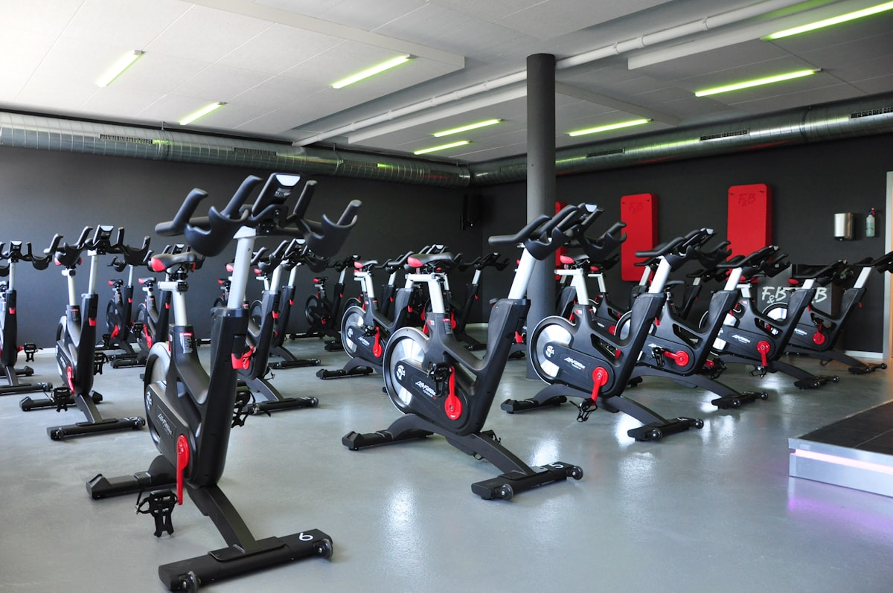

Unboxing & Assembly
The Shapeoko 3 XXL arrived in two heavy boxes — the frame kit and the electronics/spindle package. Assembly took about four hours, most of it spent squaring the aluminum extrusions and snugging the V-wheels. The instructions from Carbide 3D are decent, but I'd recommend watching a build video alongside the manual.

The most important step that's easy to rush: checking frame rigidity before mounting the gantry. I used a machinist's square at each corner and a rubber mallet to tap joints into alignment. If the frame isn't square at this stage, nothing downstream will fix it.
Tramming the Spindle
Tramming — making sure the spindle is perfectly perpendicular to the wasteboard in both X and Y — is the single highest-impact calibration you can do. Without it, facing operations leave visible ridges at the stepover boundaries, and you'll never get consistent depth-of-cut across the working area.
“Tramming is the difference between a CNC that makes parts and a CNC that makes good parts.”

Tools needed:
- Dial indicator with magnetic base (0.001″ resolution)
- Tramming arm or 3D-printed tramming plate
- Feeler gauges for shimming the spindle mount
- Hex key set for the spindle clamp bolts
The procedure: mount the indicator on the spindle, sweep a 6″ circle, note the high and low readings. Loosen the spindle mount, shim as needed, re-tighten, re-sweep. Target tolerance: 0.001″ runout over a 6″ sweep. The “two-screw” method — shimming only the two bolts at the back of the mount — gives you independent tilt and nod adjustment. Took three iterations to get it dialed.
Speeds & Feeds Testing
Speeds and feeds are where most beginners stall out. The fundamental equation is straightforward: chip load = feed rate / (RPM × number of flutes). But the real learning comes from running test cuts and listening to the machine.
Test materials and settings:
- 6061 Aluminum:
10,000 RPM,30 IPM feed, 2-flute 1/4″ carbide end mill,0.040″ DOC— produced clean chips, no chatter - Baltic Birch (3/4″):
16,000 RPM,60 IPM, single-flute upcut 1/4″, full depth in one pass — clean edges, minimal tear-out - HDPE (1/2″):
12,000 RPM,45 IPM, 2-flute O-flute,0.25″ DOC— smooth finish, no melting at these speeds
Carbide tooling is non-negotiable for aluminum. HSS dulls within minutes on 6061 and the surface finish degrades rapidly. For wood and plastics, either works fine, but carbide gives you longer tool life and more consistent results over a production run.
First Cuts & Results
The first real operation was a facing pass across the wasteboard — using a 1″ surfacing bit at 10,000 RPM, 40 IPM, 0.020″ stepdown. The result was a perfectly flat reference surface with a satin finish and barely visible stepover lines. That's the tramming paying off.

Next: a profile cut of a simple rectangular pocket in Baltic birch. Dimensions came out within 0.003″ of nominal — well within tolerance for woodworking. The pocket floor was flat and the walls were vertical and smooth.
What went well: rigidity is solid for this class of machine, the control board (Carbide Motion) is straightforward, and the working area (33″ × 33″) is generous. What needs work: the stock dust shoe is inadequate for aluminum — chips go everywhere. And the Z-axis travel limits how deep you can cut in a single setup.
Next Steps
The immediate upgrade list: homing/limit switches (the Shapeoko ships without them on the XXL), a proper dust shoe for aluminum milling, and a spoilboard surfacing jig for when the wasteboard eventually needs flattening.
Longer term, I'm planning a full enclosure with chip collection, a spindle upgrade from the Carbide Compact Router to a proper VFD spindle for better RPM control and quieter operation, and eventually a fourth axis for cylindrical work. The first real project will be milling custom aluminum enclosures for DIY synthesizer modules — which is the whole reason this machine is in the shop.